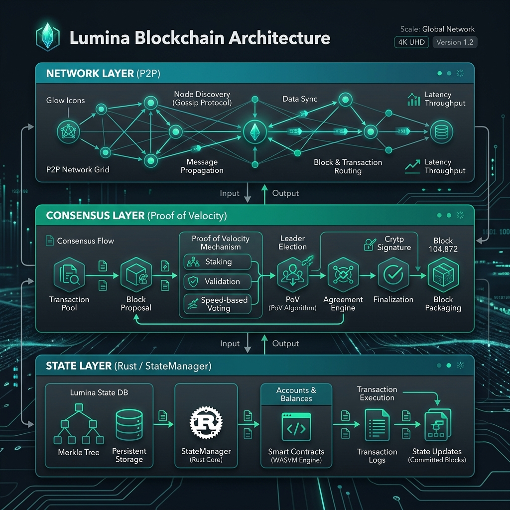
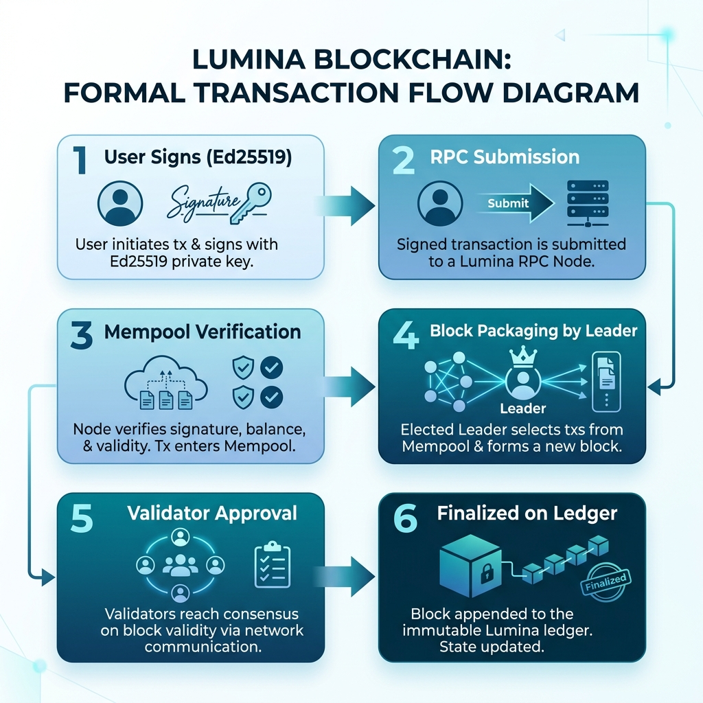

LUMINA BLOCKCHAIN RESEARCH
Scalability through Rust-Native Concurrency and Velocity Consensus
Traditional blockchain networks face a critical bottleneck: the trade-off between decentralized integrity and execution velocity. As decentralized finance (DeFi) and high-frequency on-chain applications evolve, the demand for sub-second finality and near-zero transaction costs has become paramount.
Lumina presents a novel Layer 1 solution engineered from the ground up in Rust. By utilizing the Proof of Velocity (PoV) consensus mechanism and an asynchronous multi-threaded state machine, Lumina achieves a throughput exceeding 10,000 transactions per second (TPS) on standard validator hardware. This document details the cryptographic foundations, network topology, and economic incentives that power the Lumina ecosystem.
Lumina is not a fork of existing protocols; it is a clean-sheet implementation designed for maximum hardware utilization. The core engine is built on the Tokio runtime, allowing the node to handle tens of thousands of concurrent P2P connections and transaction validations without blocking the main execution thread.
Data bloat is a common failure point in legacy chains. Lumina utilizes Bincode, a binary serialization format that is up to 5x more compact than JSON and significantly faster to process than Protobuf. This allows for ultra-thin block headers and smaller transaction payloads, reducing bandwidth requirements for validators.

Lumina's consensus, Proof of Velocity, is a high-performance variation of Delegated Proof of Stake. In PoV, the network measures two primary metrics: Stake Weight and Node Velocity.
Velocity is defined as the speed at which a validator can propagate and verify blocks. Validators with high velocity and stable uptime are prioritized in the Leader Rotation, creating a natural incentive for node operators to optimize their infrastructure and internet connectivity.

A dedicated Leader is chosen every 2 seconds to propose a new block. This Leader aggregates transactions from the Mempool, verifies nonces and balances, and broadcasts the proposed block to the Validator Set. If a majority (2/3+1) of the active stake weight approves the block within the grace period, it is committed to the global ledger.
The Lumina economy is designed to be self-sustaining, rewarding honest participants while making malicious actions prohibitively expensive.
| Component | Specification | Logic / Rationale |
|---|---|---|
| Token Symbol | LUM | Native utility and governance asset. |
| Decimal Precision | 18 Decimals | Supports micro-transactions and granular fees. |
| Dynamic Reward | 0.001 - 0.01 LUM | Scales linearly with block density to encourage high TPS. |
| Transaction Fee | 0.00001 LUM | Base fee for standard transfers, adjusted by mempool congestion. |
| Block Time | ~2.0 Seconds | Optimized for instant-feeling user experiences. |
Holders of LUM tokens can delegate their stake to any active validator. This delegation earns a portion of the Block Rewards and Transaction Fees generated by the validator. This mechanism ensures that the network security is backed by the community's capital.
To protect against Denial of Service (DoS) attacks, Lumina implements a Dynamic Fee Adjustment. As the Mempool fills up, the minimum gas price required for inclusion increases exponentially. This makes spamming the network extremely costly while keeping prices low for legitimate users during normal periods.